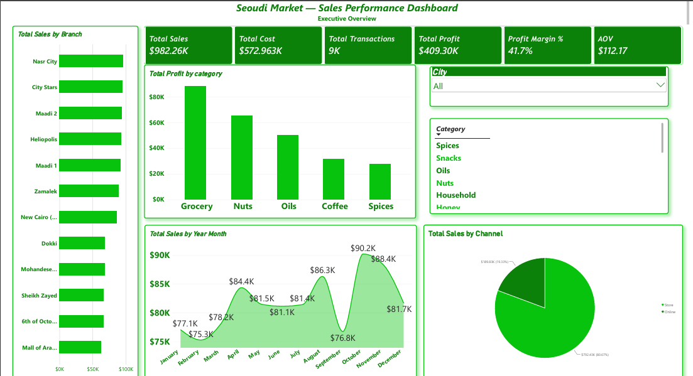

Power BI
Interactive dashboards, DAX, KPI design, drill-through and business storytelling.
JUNIOR DATA ANALYST · POWER BI
I build clean, interactive dashboards and translate complex datasets into insights that are easy to understand and act on.
01 / ABOUT ME
I’m a Computer Science student specializing in Data Science, with hands-on experience in data cleaning, data modeling, KPI development and interactive dashboard design.
My approach combines technical analysis with clear visual storytelling: understand the question, structure the data, surface the insight, then communicate the action.
02 / TOOLKIT
From transformation and modeling to visualization and storytelling.
Interactive dashboards, DAX, KPI design, drill-through and business storytelling.
Relational data, querying, database design and structured analysis.
Data analysis, problem solving and analytical workflows.
PivotTables, PivotCharts, analysis and reporting.
Data cleaning, transformation and preparation.
Fact and dimension tables, relationships and analytical models.
03 / FEATURED PROJECTS
Open each project to see every dashboard page at full clarity.
Sales, fulfillment, order status, products and geographic demand.
Open full project →
Sales, profit, products, branches, channels and customer behavior.
Open full project →Economic, demographic, health and development comparisons.
Open full project →04 / EXPERIENCE & EDUCATION
Developing practical skills in Power BI, Power Query, DAX, SQL, Excel, Python, data visualization and client communication.
Relevant coursework includes Data Analysis, Database Systems, Data Science and Programming.
05 / OTHER PROJECTS
Sales & Operations Analytics · Power BI
Interactive Performance Dashboard
ERD & Relational Database
Python algorithmic solution
06 / LET'S CONNECT
I’m open to junior data analyst opportunities, internships, freelance analytics work and collaborative projects.